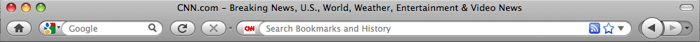

Design Challenge Tutorial: Stupid XPI Tricks - Dodgy Toolbar
Install
- See directory stupid-extensions/dodgy-toolbar
- Mac and Linux: Make a file at ~/Profiles/stupid-tricks/extensions/dodgy-toolbar@evilbrainjono
The contents of the file should be:
~/stupid-extensions/dodgy-toolbar/
- Windows: Make a file at %USERPROFILE%\Profiles\stupid-tricks\extensions\dodgy-toolbar@evilbrainjono
The contents of the file should be:
%USERPROFILE%\stupid-extensions\dodgy-toolbar\
What's it do?
- Whenever you click any button in the main navigation toolbar, all the buttons are re-ordered randomly.

How does it work?
Let's Improve it
- We'll add code to go through all the children of the custom toolbar and print out their ids.
Learn More